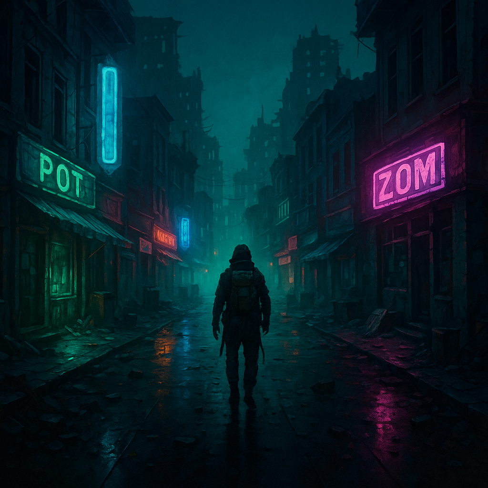

The Lost Artist
Welcome to Lost Artist Publishing — the independent home of vivid, survivalist fiction rooted in cultural memory, generational trauma, and transformation. This imprint exists for stories that don’t just entertain, but equip — blueprints for surviving broken worlds, both imagined and real.
Zombieland Mixtape, Portal, and Nasir: Wisdom Lost are more than novels — they’re spiritual weapons. Tools for surviving the collapse, be it zombie outbreak, colonial memory, or cosmic upheaval. Each story is a mixtape: nonlinear, emotionally raw, and rooted in the question — what do we carry forward when everything else is gone?
Explore the works in progress, join the collective, and follow the sound. There’s a rhythm to the end of the world — and it starts here. The map is inside you.